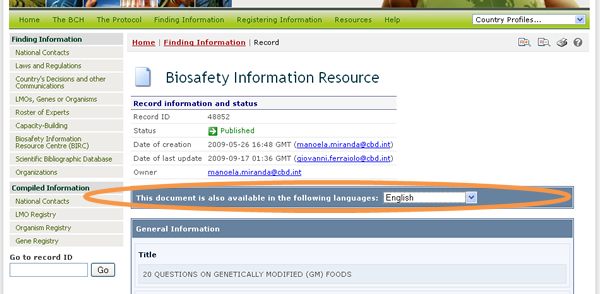

Pressing the Search button will display the search results page, listing all records that match the specified search criteria. The header of the list shows the amount of records found and provides links to navigate through the pages of the search results list.
For some categories of information, additional features are provided for handling the search results, and these are covered in the section corresponding to each category of information.
Each record displayed contains a link (which can be on the record ID or on the record name, depending on the record type) which displays the detailed record information when clicked on.

This picture was taken on February 2010 with the only purpose of providing an example on the usage of the BCH.
If the record is available in more than one language, then a bar is displayed which allows the user to select in which language to view the record information.

If any record in the database references the one currently being displayed, then a section called Records referencing this record appears at the bottom of the page. This section provides direct links to all records that reference the current one.